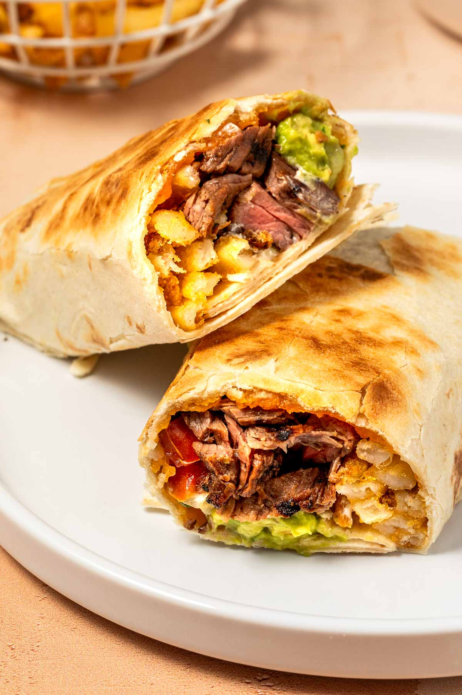

Mix Dry Ingredients: In a large bowl, whisk together the flour, sugar, baking powder, baking soda, and salt until well combined.
Mix Wet Ingredients: In another bowl, combine the milk, egg, melted butter, and vanilla extract. Whisk until smooth.
Combine Mixtures: Pour the wet ingredients into the dry ingredients. Stir gently with a spatula or wooden spoon until just combined. Be careful not to overmix; some lumps are okay.
Heat the Pan: Preheat a non-stick skillet or griddle over medium heat. Lightly grease it with butter or oil.
Cook the Pancakes: Pour about 1/4 cup of batter for each pancake onto the skillet. Cook until bubbles form on the surface and the edges look set, about 2-3 minutes. Flip the pancakes and cook for another 1-2 minutes until golden brown and cooked through.
Serve: Serve warm with your favorite toppings, such as maple syrup, fresh fruit, whipped cream, or nuts.
Tips
For extra fluffy pancakes, let the batter rest for about 5-10 minutes before cooking.
You can add blueberries, chocolate chips, or nuts to the batter for added flavor.
If you have leftovers, store them in the refrigerator for up to 3 days or freeze them for later use.

Burritos
Simple, super tasty everyday burritos
×
Fresh Burritos
Ingredients:
4 large flour tortillas
1 can (15 oz) black beans, rinsed and drained
1 cup cooked rice (white or brown)
1 cup shredded cheese (cheddar or Monterey Jack)
1 cup diced tomatoes
1/2 cup corn (canned or frozen)
1 avocado, sliced
1/4 cup fresh cilantro, chopped
1 lime, cut into wedges
Salt and pepper to taste
Optional: salsa, sour cream, or hot sauce for serving
Instructions:
Prepare the Filling: In a large bowl, combine black beans, cooked rice, diced tomatoes, corn, and half of the cheese. Season with salt and pepper.
Warm the Tortillas: Heat the flour tortillas in a skillet over medium heat for about 30 seconds on each side until warm.
Assemble the Burritos: On each tortilla, place a portion of the filling mixture, a few slices of avocado, cilantro, and the remaining cheese.
Wrap the Burritos: Fold in the sides of the tortilla and roll from the bottom to enclose the filling. Ensure it's tightly wrapped.
Serve: Serve the burritos warm with lime wedges and your choice of salsa, sour cream, or hot sauce.
Tips:
You can add cooked chicken, beef, or tofu for extra protein.
Customize your burrito with other toppings like jalapeños or different beans.
Wrap the burritos in foil to keep them warm if serving multiple.
Steak
Here's how to cook steak like a chef!
×
Grilled Steak
Ingredients:
2 ribeye or sirloin steaks (about 1-inch thick)
2 tablespoons olive oil
2 cloves garlic, minced
1 teaspoon salt
1/2 teaspoon black pepper
1 teaspoon dried rosemary (or fresh, chopped)
1 teaspoon dried thyme (or fresh, chopped)
Optional: steak seasoning or marinade of your choice
Instructions:
Prepare the Steaks: Pat the steaks dry with paper towels and place them in a shallow dish.
Season: In a small bowl, mix olive oil, garlic, salt, pepper, rosemary, and thyme. Rub this mixture onto both sides of the steaks.
Preheat the Grill: Preheat your grill to medium-high heat.
Grill the Steaks: Place the steaks on the grill and cook for about 4-5 minutes on each side for medium-rare, or adjust time to your desired doneness.
Rest and Serve: Remove the steaks from the grill and let them rest for 5 minutes before slicing. Serve with your favorite sides.
Tips:
For more flavor, marinate the steaks for a few hours or overnight.
Use a meat thermometer to check for doneness (130°F for medium-rare).
Letting the steaks rest allows the juices to redistribute for a juicier steak.